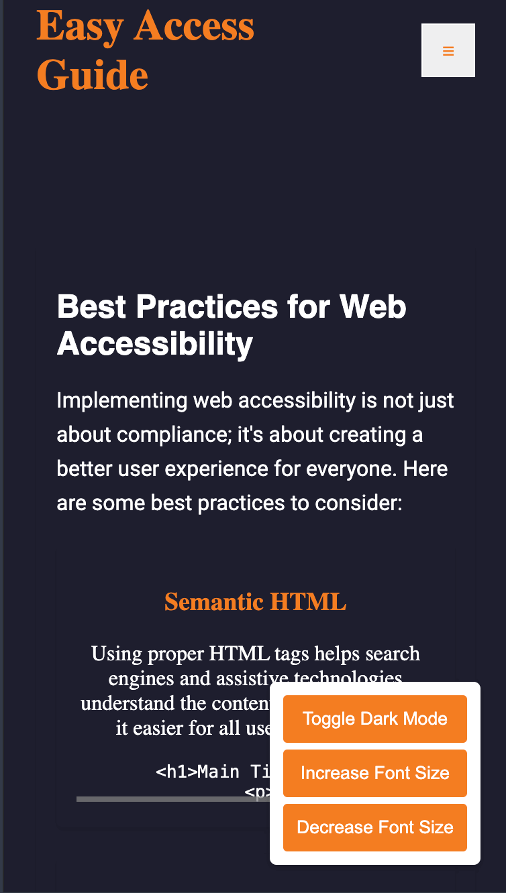
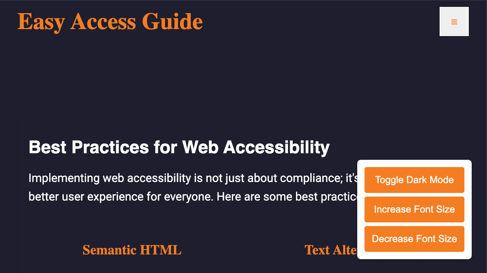

Best Practices for Web Accessibility
Implementing web accessibility is not just about compliance; it's about creating a better user experience for everyone. Here are some best practices to consider:
Semantic HTML
Using proper HTML tags helps search engines and assistive technologies understand the content structure, making it easier for all users to navigate.
<h1>Main Title</h1>
<p>This is a paragraph.</p>Text Alternatives
Providing alt text for images allows screen readers to convey the content of the images to users with visual impairments.

Keyboard Navigation
Ensure all interactive elements, like buttons and links, can be navigated using a keyboard to accommodate users with motor disabilities.
<button>Click Me</button>Color Contrast
Check color contrast ratios to ensure text is readable against the background, benefiting users with visual impairments.
Use tools like the WebAIM Contrast Checker to validate your colors.
Responsive Design
Create layouts that adapt to various screen sizes to provide an optimal experience across devices.

Accessible Forms
Use clear labels for form elements and provide feedback for errors to enhance usability.
<label for="name">Name:</label>
<input type="text" id="name" />Focus Indicators
Ensure that focus states are visible when navigating via keyboard, helping users identify which element is currently selected.
Try navegate in this site using the TAB!.
Skip Navigation Links
Provide links at the top of pages that allow users to skip directly to the main content, improving navigation efficiency.
<a href="#maincontent">Skip to main content</a>Use ARIA Wisely
ARIA can enhance accessibility but should be used judiciously to avoid confusion.
Testing with Users
Gather feedback from users with disabilities during testing to identify areas for improvement.